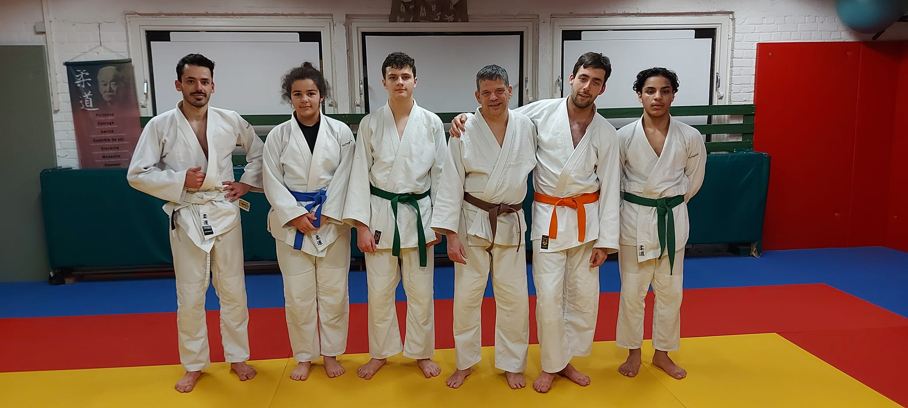
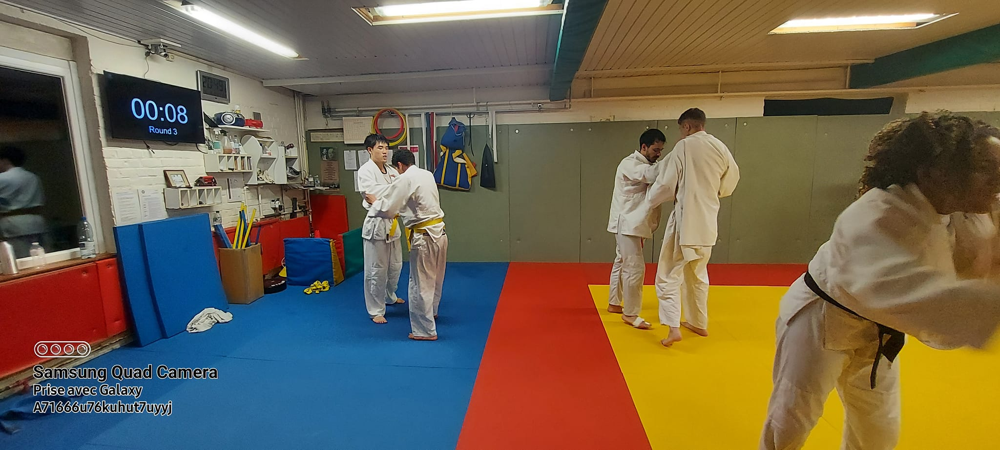

Qui suis-je ?Je m'appelle Brouillé Adam, j'ai 23 ans et mon grand objectif dans la vie est d'être enseignant. Après ma rétho j'ai choisi de faire une 7ième années spéciale math à l'institut Saint-Louis. Durant cette année, j'ai pu apprendre les maths de façon rigoureuse. J'ai énormément apprécié cette année car j'y ai découvert ma passion pour les maths. À Saint-Louis, nous avons appris à comprendre et à démontrer toutes les formules que nous découvrions. Cette façon de faire m'a permis de m'approprier la matière et donc de m'améliorer considérablement. Après avoir réussi cette année, j'ai passé et réussi l'examen d'entrée à l'Ulb pour faire des études d'ingénieur civil mais j'ai choisi d'aller à l'Ecam car tous mes amis y sont allé et ça me rassurait de les avoir près de moi. Durant mon année j'ai eu l'occasion de donner quelques cours de maths à des camarades et cela m'a beaucoup plus. J'ai donc pris la décision de changer d'orientation pour devenir professeur de maths.
Mes atouts sont :
- Ma passion pour les maths
- Mon self-control
- Ma polyvalance
- Mes nombreux centres d'intérêt
- Ma culture variée
- ...
J'aime apprendre, c'est mon moteur principal et la chose qui me stimule le plus. La seconde chose qui me passionne est de transmettre ce que j'apprends et de voir l'évolution des élèves. Cependant, j'ai également des faiblesses qui découlent parfois de mes atouts comme le fait que j'ai beaucoup de centre d'intérêt et qu'il m'arrive d'en avoir qui prennent plus de place que d'autres. Mes craintes sont de ne pas être à la hauteur pour réussir mes études et d'être démotivé comme je l'ai été durant mes études d'ingénieur. Pour finir, j'ai choisi l'heff car mon coach de judo, qui est également professeur de sport dans le secondaire, y a fait ses études et me l'a conseillé.
Mes centres d'intérêt sont :
- Les maths
- Les sciences
- Le developpement web
- Les technologies
- Le sport
- La guitare
- L'éléctronique
- Les echecs
- ...

Ma passion pour les maths a commencé en 2020-2021 lorsque j'étais en spéciale math. Durant cette année, je faisais des maths tous les jours et à toute heure. J'ai aimé le fait de comprendre d'où découlait toutes les équations que l'on apprenait en secondaire. Aujourd'hui encore, je me sens obligé de démontrer toutes les équations que j'apprends avant de pouvoir les utiliser.
Quelques vidéos :
Mes vidéos :
Vidéos divers :

Lorsque je suis arrivé en 3ième secondaires et que j'ai dû choisir une option, je ne sais pas pour quelles raisons j'ai choisi la science mais je ne regrette pas du tout ce choix aujourd'hui. J'ai vite été absorbé par les sciences grace au labo qui me permettait de voir ce que les équations racontaient. Si je devais hiérarchiser les trois disciplines selon mon ordre de préférence, cela donnerait : Physique, Chimie et Bio. La physique est de loin la discipline que je préfère et c'est pour cela que j'ai immédiatement décidé de me lancer en physique après ma rétho.
Quelques vidéos :

J'ai découvert le monde de la programmation en 7ième maths car nous avions un cours dédié à l'apprentissage du langage Python. J'ai eu beaucoup de mal au début car je ne voyais pas le sens et je ne voyais pas les effets du code en direct. Ma passion est apparue lorsque nous avons commencé à utiliser les boucles, les fonctions, les listes, ... Nous pouvions donc réaliser des résolveurs que nous utilisions même en dehors de ce cours. J'ai continué à évoluer dans ce langage en igné et ma passion s'est renforcée. J'ai ensuite eu envie d'apprendre de nouvelles choses et je me suis donc lancé dans le développement web. J'ai appris à utiliser HTML, CSS, SCSS, PHP, Github et JS qui m'a permis de réaliser quelques projets dont ce portfolio.
Quelques projets :


J'ai toujours été interessé par les nouveaux techniques et c'est encore plus vrai aujourd'hui. Je m'intéresse particulièrement aux IA (intelligence artificielle) car c'est à la fois impressionnant et effrayant. Chatgpt, une IA qui fait beaucoup parler d'elle en ce moment et que j'ai testez-nous montre la puissance de cette nouvelle technique.


Le sport et moi c'est une histoire d'amour car de mémoire j'en ai toujours fait. J'ai commencé par du foot et par la suite j'ai fait du karaté, de la boxe anglaise, du basket-ball, de la lutte, du jiu-jitsu et aujourd'hui je fais du judo. Avoir un sport dans ma routine est indispensable car j'ai besoin de me dépenser et de décompresser.
Quelques photos :
 
J'ai commencé la guitare il y a environ 5 ans. Je prenais des cours mais je n'étais pas passionné donc j'ai très vite arrêté. Il y a un an j'ai décidé de m'acheter une guitare dans l'idée de retenter l'expérience et cette fois-ci j'ai accroché. Je joue un peu tous les jours, ça me permet de me vider la tete. Je ne suis pas assez doué pour présenter ce que je joue mais peut-être que je le serais d'ici un an ou deux.

Mon intérêt pour l'électronique à commencer lorsque j'étais en igné. Nous avions un cours de technologie électronique que j'ai très vite apprécié. Nous utilisions Arduino pour travailler et le fait de voir l'effet du code en direct rendait l'activité satisfaisante. J'ai donc décidé d'aller plus loin en achetant des kits plus complets qui comportait des technologies avancées (détecteur de mouvements, pavé tactile....). Depuis je bricole à mes heures perdues et j'aime toujours autant ça.
Arduino :

J'ai commencé à jouer aux échecs assez tot, vers mes 9 ans, car mon père y jouait énormément. Je n'étais pas un grand fan à cet âge mais vers mes 17 ans je m'y suis mis sérieusement. J'y jouais tous les jours sur le site Chess.com car je voulais atteindre les 2000 lo. Ce chiffre représente le rapport victoire, défaite et nul. Je visais les 2000 lo car c'est un score assez élevé qui me faisait rêver à cette époque. Aujourd'hui je suis clairement moins actif car je ne joue plus en ligne mais je fais tout de même, quelques parties, de temps en temps avec des amis.
Si je devais me décrire en quelques mots :
- Passionné
- Travailleur
- Compréhensif
- Polyvalent
- Têtu
- Constamment en mouvement
- ...